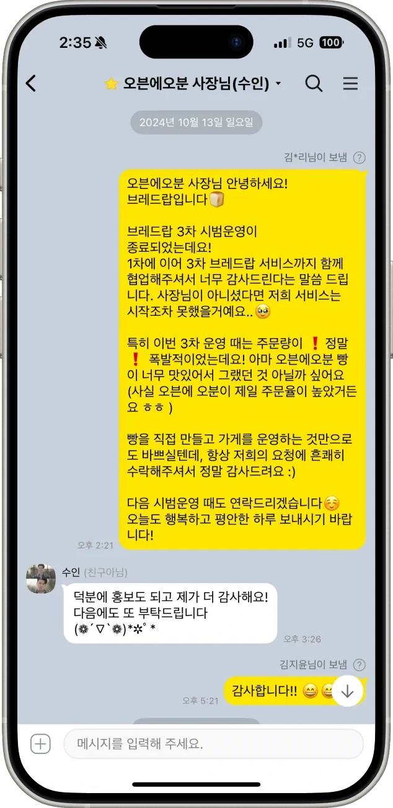

7개 파트너사,
현장에서 설득하다
현장 기반 페인포인트 분석과 차별화된 가치 제안으로
7개 베이커리 파트너사 입점을 설득한 B2B 세일즈

문제
경쟁 플랫폼이 이미 존재하는 시장에서, 차별화 없이는 베이커리 입점 설득이 불가능
전략
✕ 차별화 안 됨
처음
수수료를 낮춰 설득
베이커리 하루 근무로 찾은 진짜 페인포인트
- 매일 재고 등록 수고
- 폐기 손실
- 마케팅 여력 부족
3-Point 가치 제안
- 낮은 수수료
- 재고 등록 간소화
- 마케팅 대행
성과

7개 베이커리
파트너십 체결
재계약률 100% 달성
(7개 파트너사 재계약)
Insight“B2B 고객은 가격이 아니라, ‘우리 문제를 해결한다’는 확신으로 움직인다.
그리고 그 확신은 고객의 현장 이해에서 시작된다.”